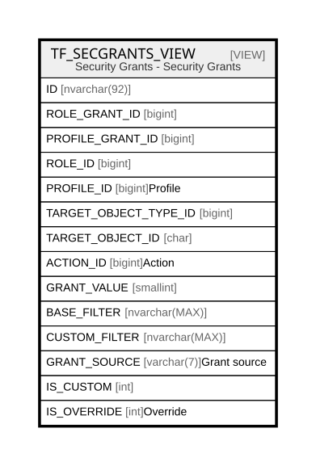

TF_SECGRANTS_VIEW
Description
Security Grants - Security Grants
Table Definition
-- Talentia Software - All right reserved
-- Type: VIEW Name: TF_SECGRANTS_VIEW
-- Date: 09-04-2026 07:27:59 (UTC)
--
-- ChangeLogId: 00000000-0000-0000-0000-000000000000
-- ChangeSetId: d113a907-258c-4fef-b30a-1cd577da982a
-- Original file name: C:\repos\Talentia-Software\hcm-core/DB/ProductDB/EDM\Schema\Views\TF_SECGRANTS_VIEW.xml
CREATE VIEW [TF_SECGRANTS_VIEW]
AS
(
SELECT
CONVERT(NVARCHAR, RG.ID) + '_0_' + CONVERT(NVARCHAR, PC.ID) AS ID,
RG.ID AS ROLE_GRANT_ID,
NULL AS PROFILE_GRANT_ID,
RG.ROLE_ID AS ROLE_ID,
PC.ID AS PROFILE_ID,
RG.TARGET_OBJECT_TYPE_ID AS TARGET_OBJECT_TYPE_ID,
RG.TARGET_OBJECT_ID AS TARGET_OBJECT_ID,
RG.ACTION_ID AS ACTION_ID,
RG.GRANT_VALUE AS GRANT_VALUE,
RG.BASE_FILTER AS BASE_FILTER,
RG.CUSTOM_FILTER AS CUSTOM_FILTER,
'Role' AS GRANT_SOURCE,
0 AS IS_CUSTOM,
0 AS IS_OVERRIDE
FROM TF_PROFILE_CATALOG PC
INNER JOIN TF_ROLE_GRANTS RG ON PC.ROLE_ID = RG.ROLE_ID
LEFT JOIN TF_PROFILE_GRANTS RPG ON (RPG.PROFILE_ID = PC.ID AND RPG.ACTION_ID = RG.ACTION_ID AND RPG.TARGET_OBJECT_TYPE_ID = RG.TARGET_OBJECT_TYPE_ID AND RPG.TARGET_OBJECT_ID = RG.TARGET_OBJECT_ID)
WHERE RPG.ID IS NULL
UNION ALL
SELECT
CONVERT(NVARCHAR, COALESCE(RG.ID, 0)) + '_' + CONVERT(NVARCHAR, RPG.ID) + '_' + CONVERT(NVARCHAR, PC.ID) AS ID,
RG.ID AS ROLE_GRANT_ID,
RPG.ID AS PROFILE_GRANT_ID,
PC.ROLE_ID AS ROLE_ID,
PC.ID AS PROFILE_ID,
RPG.TARGET_OBJECT_TYPE_ID,
RPG.TARGET_OBJECT_ID AS TARGET_OBJECT_ID,
RPG.ACTION_ID,
RPG.GRANT_VALUE AS GRANT_VALUE,
COALESCE (RPG.BASE_FILTER, RG.BASE_FILTER) AS BASE_FILTER,
COALESCE (RPG.CUSTOM_FILTER, RG.CUSTOM_FILTER) AS CUSTOM_FILTER,
'Profile' AS GRANT_SOURCE,
1 AS IS_CUSTOM,
CASE WHEN RG.ID IS NOT NULL THEN 1 ELSE 0 END IS_OVERRIDE
FROM TF_PROFILE_CATALOG PC
INNER JOIN TF_PROFILE_GRANTS RPG ON PC.ID = RPG.PROFILE_ID
LEFT JOIN TF_ROLE_GRANTS RG ON (RG.ROLE_ID = PC.ROLE_ID
AND RG.ACTION_ID = RPG.ACTION_ID
AND RG.TARGET_OBJECT_TYPE_ID = RPG.TARGET_OBJECT_TYPE_ID
AND RG.TARGET_OBJECT_ID = RPG.TARGET_OBJECT_ID)
)
Columns
| Name | Type | Default | Nullable | Comment |
|---|---|---|---|---|
| ID | nvarchar(92) | true | ||
| ROLE_GRANT_ID | bigint | true | ||
| PROFILE_GRANT_ID | bigint | true | ||
| ROLE_ID | bigint | false | ||
| PROFILE_ID | bigint | false | Profile | |
| TARGET_OBJECT_TYPE_ID | bigint | false | ||
| TARGET_OBJECT_ID | char | false | ||
| ACTION_ID | bigint | false | Action | |
| GRANT_VALUE | smallint | false | ||
| BASE_FILTER | nvarchar(MAX) | true | ||
| CUSTOM_FILTER | nvarchar(MAX) | true | ||
| GRANT_SOURCE | varchar(7) | false | Grant source | |
| IS_CUSTOM | int | false | ||
| IS_OVERRIDE | int | false | Override |
Referenced Tables
| Name | Columns | Comment | Type |
|---|---|---|---|
| TF_PROFILE_CATALOG | 24 | Profile catalog - TF_PROFILE_CATALOG |
BASIC TABLE |
| TF_ROLE_GRANTS | 18 | Role Grants - Role Grants |
BASIC TABLE |
| TF_PROFILE_GRANTS | 15 | Profile grant - TF_PROFILE_GRANT |
BASIC TABLE |
Relations

Generated by tbls